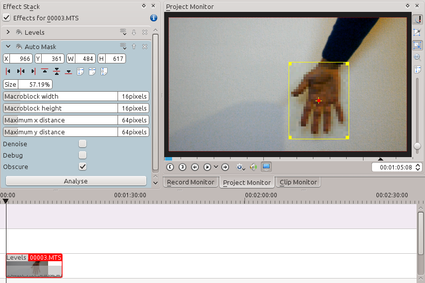
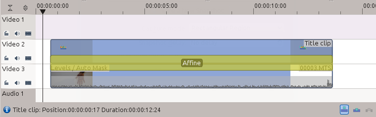
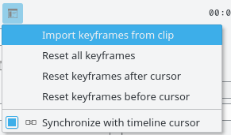
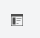
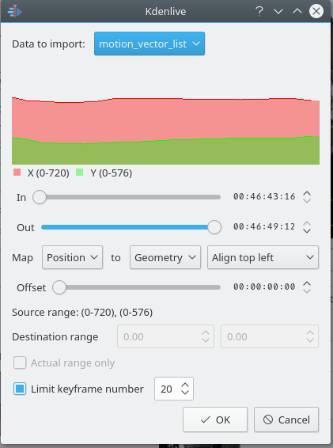
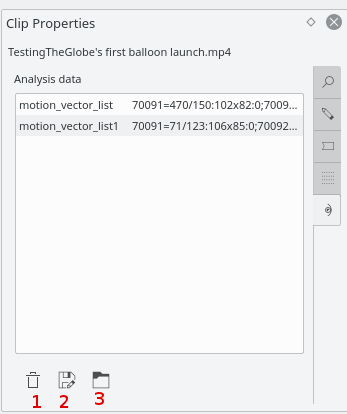

Deprecated since version 21.08: Use Motion Tracker instead
Auto Mask¶
This effect can be used to mask peoples faces. It uses motion estimation to track subjects and mask faces. It is the MLT filter autotrack_rectangle
Demo¶
How to apply Auto Mask¶
See video below on how to use this effect. Warning: The effect is not 100% reliable.
Motion Tracking¶
The Auto Mask effect can also be used to track motion of an object and use it later as keyframes for an effect / transition.
Note
The method described here is a re-purposing of the motion tracking data that the Auto Mask effect calculates. You do not need to follow the method described below to generate an Auto Mask that will obscure faces. The instructions in the above video should be enough. Nor can you use the method described below to improve the tracking of the mask created by the Auto Mask effect.
To use this feature, first, add the clip you want to analyze in the timeline, and add the “Auto Mask” effect to it - Figure 1.
{kind=link}
Go to the first frame where your object is visible, and adjust the yellow rectangle so that it surrounds the object, like the hand in Figure 1.
Then click on the button in the effect options. This will start an analysis of the clip (you can follow its progress in the Project Tree view).
{kind=link}
When the job is finished, the motion tracking data is stored in the clip properties. To use this data, you can, for example, add a title clip and affine transition over the clip you just analyzed, like in the screenshot in Figure 2..
{kind=link}
Next step is to import the motion data in the transition. To do this, first, select the clip you have analyzed, then select the transition using the CTRL key so that both items are selected. Finally, go in the transitions’s Options menu
and select . You can now delete the “Auto Mask” effect from the clip in the timeline and play the project to see your title clip following the object.
{kind=link}
Checking the Limit keyframes number checkbox In the “Import Keyframes” dialog (Figure 4) will cause Kdenlive to only import every nth frame (where n is the number selected in the combo box). This is a useful feature if you want to manually edit the keyframes that are imported because it allows you to limit the number of keyframes you will need to manually edit. If this checkbox is not checked then you import a keyframe for every frame that is in the source clip.
Deleting Motion Tracking Data¶
The motion tracking data is saved with the Clips. You can view this data from the clip properties Analysis tab - Figure 5. Delete the data using button 1
{kind=link}